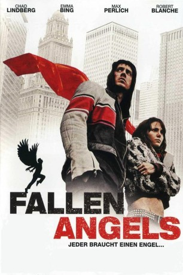

#8329 Fallen Angels - Jeder braucht einen Engel
 
 IMDB-Wertung: 6.1 / 10
IMDB-Wertung: 6.1 / 10  Metascore: 0
Metascore: 0 
Sarah ist eine 15-jährige Teenagerin, die unter dem Missbrauch ihres Vaters leidet. Spike ist ein 21- jähriger junger Mann, der seine Hoffnung, als Musiker berühmt zu werden, fast aufgegeben hat. Beide halten sich mit kleineren Gaunereien gerade eben so über Wasser. Aber beide haben auch ihre hingebungsvolle und bedingungslose Liebe für einander - und diese lässt sie die größten Probleme wie ihre Drogensucht wenigstens zeitweise vergessen. Als Spike mit seiner Band erste Erfolge feiert, können die beiden zunächst auf eine bessere Zukunft hoffen. Wird ihre Liebe stärker sein als die Steine die ihnen überall in den Weg gelegt werden?
Jahr: 2006
Dauer: 102 Minuten
FSK: 16
Land: Italien Studio: Edel Media & EntertainmentTonspuren:
Untertitel:
Auflösung: 1080p (1920x1080) Größe: 6461 MB
Genre: Drama
Regisseur: Nick Lyon
Drehbuch: Nick Lyon
Soundtrack: Miles Mosley
Darsteller:
 Chad Lindberg als Spike
Chad Lindberg als Spike- Emma Bing als Sarah
 Max Perlich als Officer Lawson
Max Perlich als Officer Lawson Robert Blanche als Dick
Robert Blanche als Dick Craig Richards als Deputy Sheriff Jones
Craig Richards als Deputy Sheriff Jones- J.W. Crawford als Man
- Sherilyn Lawson als Jane
- Mad Martian als Doctor
- Victor Morris als Officer Banks
- Susan Spencer als Nurse
- Richard Topping als Hotel Manager
- Todd A. Robinson als Gurney cop (uncredited)
- Christopher Blake als Deputy Sheriff
- Don Burns als John
- Jim Caputo als Captain Kiddo
Datei: X:\2006(A-F)\Fallen Angels - Jeder braucht einen Engel (2006, FSK16, 1920x1080).mkv seit 24.02.2018
Festplatte: HD 2005(G-Z)-2006(A-Z)
 Es gibt insgesamt 56 Filme in der Gruppe '2006(A-F)'
Es gibt insgesamt 56 Filme in der Gruppe '2006(A-F)'